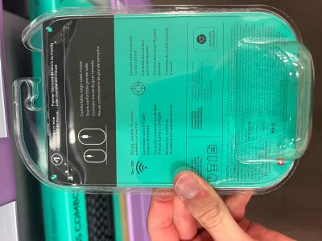

Introduction
This report is about the M310 Logitech Wireless Computer Mouse as shown below.
About the M310
The M310 is a computer mouse that communicates to the cursor diplayed in an Operating System (OS) wirelessly. It contains features found in most computer mouses such as right-click and left-click functions. It contains a wheel that is used for scrolling smoothly through webpages, electronic documents, etc. on the OS.
This mouse is compatable with most OS's including Windows, Mac, and Linux and is certified to work with chromebooks. What makes this product stand out from its competitors is its ergonomic and ambidexterous design. It has an easy grip especially for big hands and feels comfortable for left and right handed people. The M317, also made by Logitech, is a great alternative to this product since it contains similar features but smaller in size and more compact.